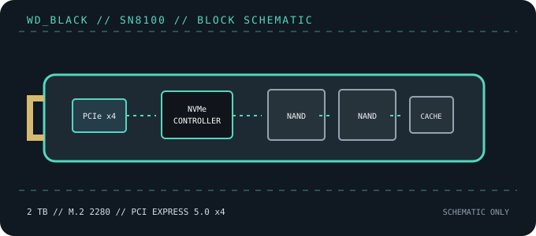

[ PCIE 5.0 NVME DRIVES // IDENTIFIED PRODUCT ]
WD_BLACK SN8100 2 TB (WDS200T1X0M-00CMT0)
2 TB single-sided M.2 2280 PCIe 5.0 x4 NVMe drive, cataloged by the bare-module manufacturer SKU WDS200T1X0M-00CMT0. Published peak values are vendor-rated, not guaranteed sustained transfer rates.

IDENTIFICATION: Confirm the printed model code, capacity, suffix, hardware revision and firmware against the actual drive. Similar family names can denote different heatsinks, controller platforms and performance. Values here identify the cited 2 TB SKU and remain subject to the linked manufacturer documentation.
Manufacturer-identified specifications
| Model / manufacturer code | WD_BLACK SN8100 2 TB (WDS200T1X0M-00CMT0) — WDS200T1X0M-00CMT0 |
|---|---|
| Capacity / physical format | 2 TB; M.2 2280, single-sided, bare module |
| Interface / lane width | PCI Express 5.0 x4; backward operation depends on host PCIe/NVMe support. |
| Protocol | NVMe command protocol; exact revision and optional features depend on drive firmware and host support. |
| Vendor-rated sequential performance | Up to 14,900 MB/s read / 14,000 MB/s write; peak ratings, not sustained guarantees. |
| Endurance / warranty | 1,200 TBW; 5 years (terms vary by region) |
| Controller / flash | SanDisk A101-250800-AC / SM2508 platform (model-specific database identification); 3D TLC NAND. Component details can vary by production revision; use the exact drive label and current manufacturer documentation. |
| Cooling / package note | No factory heatsink on the WDS200T1X0M SKU; use a compatible motherboard M.2 thermal solution where required. |
Compatibility, installation & service
- Requires an M.2 M-key socket with PCIe x4 routing for Gen5 x4 operation; on a slower PCIe host, the link negotiates at the host-supported generation.
- The standard 2280 module is single-sided and has no factory heatsink in this SKU. Check motherboard standoff, cover clearance and thermal-pad contact before installing.
- This client SSD does not establish boot support on its own: confirm system UEFI/NVMe support, lane sharing and firmware requirements in the host manual.
- Before replacing a boot drive, create a recoverable backup and confirm OS recovery media, encryption keys and firmware settings. Follow clean shutdown and electrostatic-discharge precautions; do not hot-plug M.2 unless the platform manual explicitly supports it.
Product references
- SanDisk — WD_BLACK SN8100 2 TB, no-heatsink product listingOfficial SKU and manufacturer product information.
- TechPowerUp — WD Black SN8100 2 TB reviewIndependent testing, product identification and thermal/performance context.
Manufacturer ratings are capacity- and test-condition-specific. Independent tests characterize only the tested sample and workload. Consult current manuals and support portals for revisions, fit, firmware and warranty conditions.